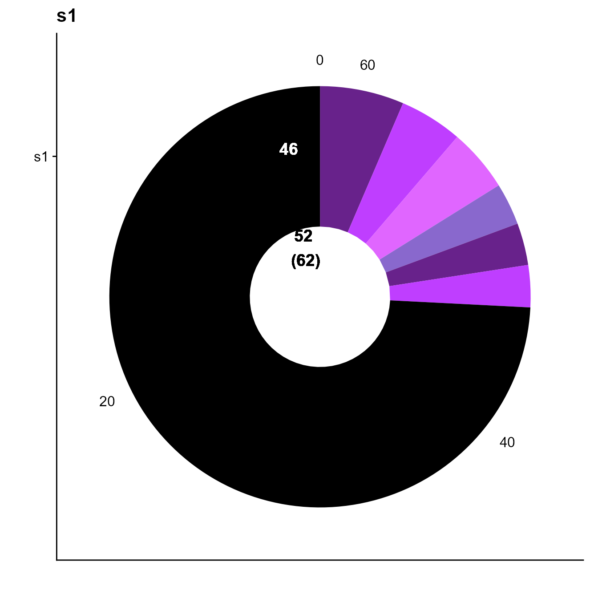
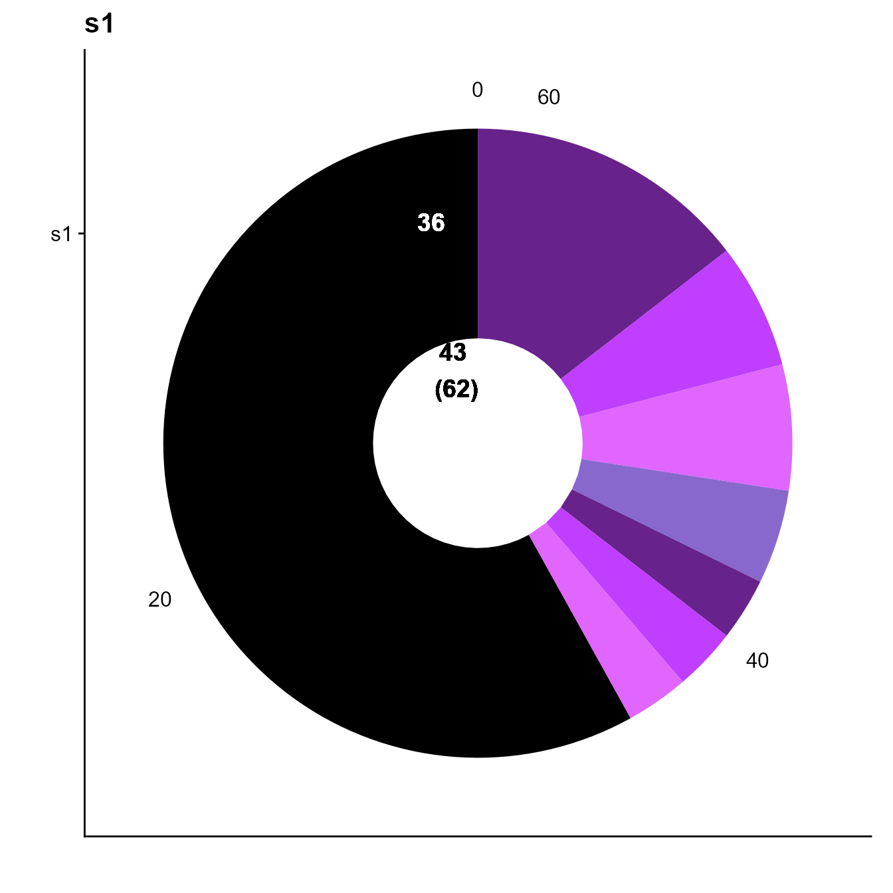
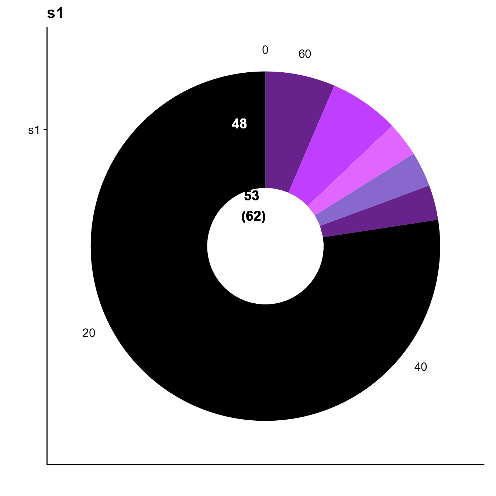
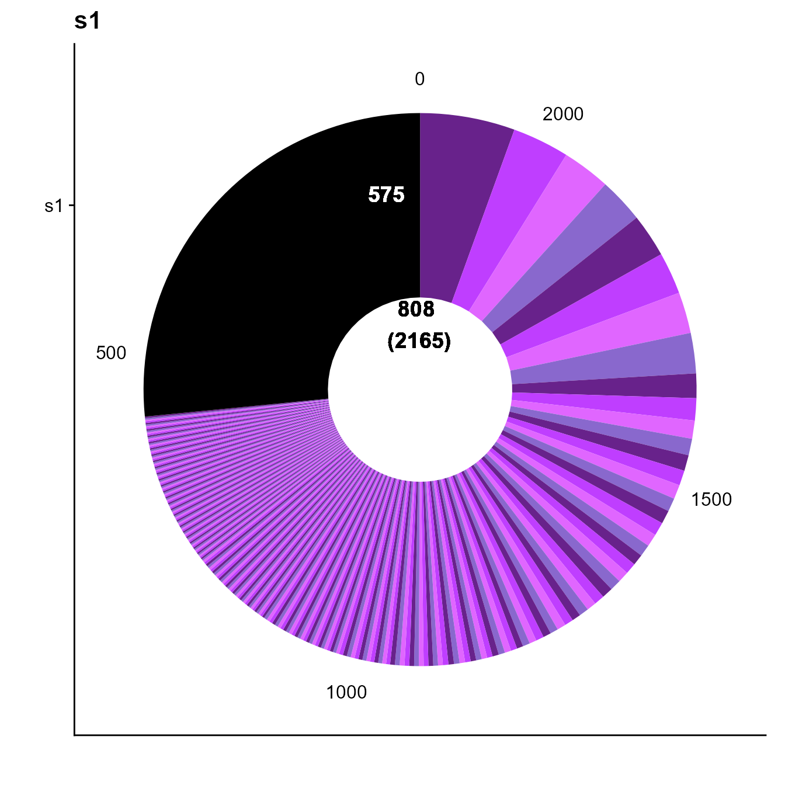
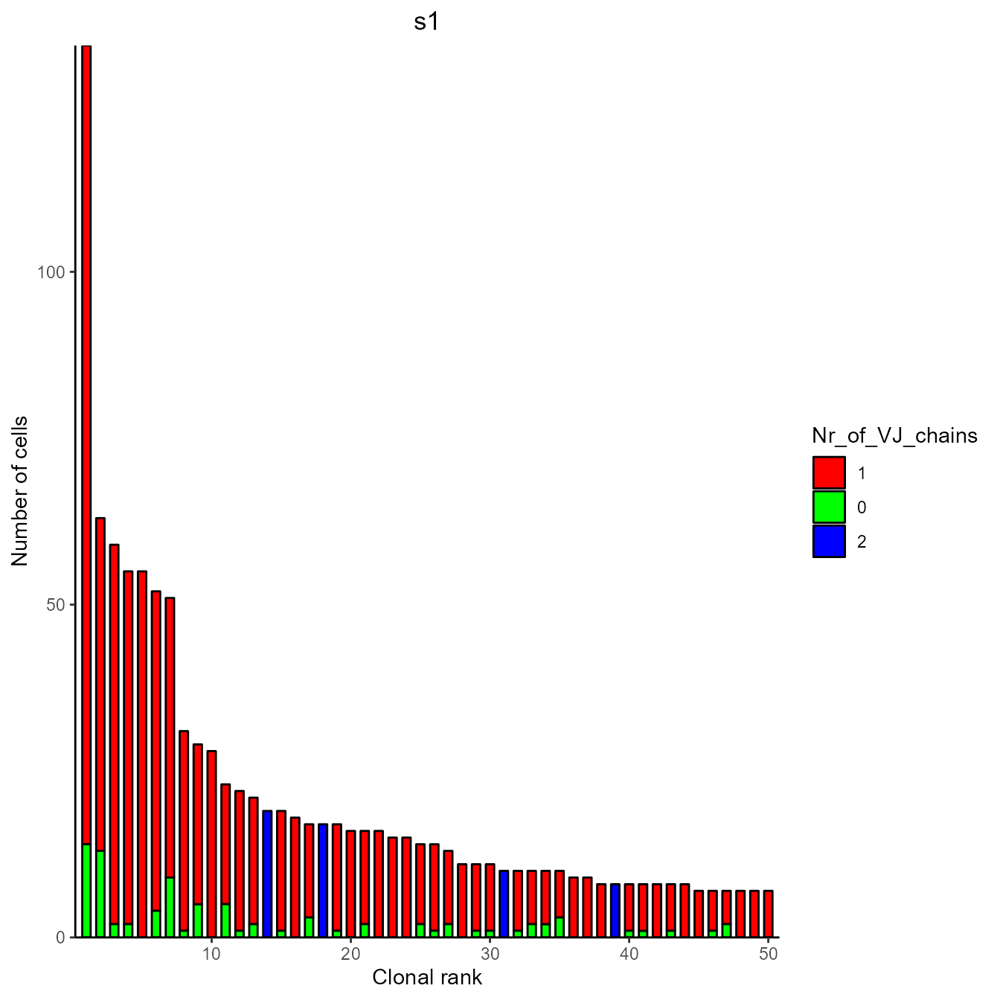
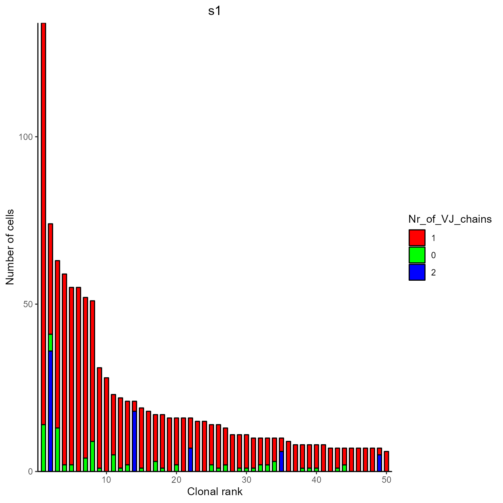

PlatypusV3 Clonotyping and multiple chains
Victor Kreiner, Tudor-Stefan Cotet, Alexander Yermanos
2022-08-07
Source:vignettes/clonotyping.Rmd
clonotyping.Rmd1. Introduction
Clonotyping describes the process of assigning cells to clonal groups. These groups encompas all cells carrying T or B cell receptors that were generated in the same recombination event in a single anchestoral cell.
Classical clonotyping is based on identical sequences of VJ and VDJ CDR3 regions. But this strategy may not be the best strategy given somatic hypermutation may occur in the CDR3 region. Therefore, there could be highly similar clones that likely bind the same antigen that are officially part of different clonal families. To address this, we have added a function that allows for various heuristic clonotyping strategies. This involves clonotyping by identical amino acid CDRH3 + CDRL3 sequence, identical germline usage, or seqeunce homology requirements. This function works both for V3 and V2 of platypus. The version needs to be specified. For V3 (vgm) platypus.version a new clonotyping function was added to improve the existing one. For the full documentation see VDJ_clonotype().
Three new parameters have been added therein:
global.clonotype If set to TRUE, clonotypes will be generated across all samples of the vgm. This may be useful if more than one sample has been taken from the same animal (e.g. spleen and bone marrow) and processed in separate Cellranger runs. Moreover this can provide an alternative approach to investigate clone sharing across donors or mice. After global clonotyping, the resulting clonotype_id can be used as a grouping variable and summary statistics can be generated per clone (including its presence in multiple repertoires.)
Hierarchical clonotyping for cells with aberrant chain numbers A key issue in Clonotyping is how to deal with cells with aberrant chain numbers (e.g. 0VDJ 1VJ, 1VDJ 0VJ, 1VDJ 2VJ, …) Cells with only a single chain are common due to stochasitcal sampling of mRNA. Cells with more than 2 chains are uncommon. These originate from either cell doublets, from contamination with free cellular mRNA during capture or lysis. Further it is not to disregard, that cells carrying 2VJ chains are described in literature.
Hierarchical clonotyping in Platypus was build to adress these issues while giving the user ample flexibility. The underlying concept is to first define “high confidence” clones based on 1VDJ 1VJ cells and later slot in aberrant cells. A key update as part of the hierarchical clonotyping strategy in v3 is the same-sample-criterion. This is explained below.
For cells with aberrant numbers of VDJ and VJ chains the functions implements a hierarchical clonotyping. In brief, clonotypes are determined based on all cells with exactly 1VDJ and 1VJ chain. Other cells are then “joined in” in post. Three different modes are available:
hierarchical = “none” Create clonotypes from 1 VDJ 1 VJ cells. Aberrant cells are be grouped separately (two cells with the same VJ chain but both without a VDJ chain are still grouped as one clonotype.)
hierarchical = “single.chains” Cells with a single chain (e.g. 0VDJ and 1VJ or 1VDJ and 0VJ) are merged into existing clonotypes containing the same or a homologous VJ chain, depending on the clonotyping strategy. Here the same-sample-criterion is applied when using global clonotyping. If multiple matching clonotypes have been found for that cell then ones within the same sample_id are prioritized. If further multiple matches exist in that sample_id, the cell is merged into the clone with the highest frequency.
hierarchical = “double.and.single.chains” A combination of 1VDJ and 2VJ chain will first be checked for frequency in the dataset (by exact nucleotide CDR3 matching). Only if this count exceeds the triple.chain.count.threshold, the clone is used as a “hub clone”. This protects from merging clonotypes on the basis of rare doublets. Existing clonotypes are then merged into the 1 VDJ 2 VJ clonotypes as they match with the assumption that e.g. a cell with 1 VDJ 1 VJ is part of that same clonotype, but missing a VJ chain due to stochastical sampling.
!Sidenote on aberrant cell filtering: The VDJ_GEX_matrix function offers the feature to filter cells with aberrant chains or to select chains in cells with 2 VDJ or VJ chains based on the contig UMI count. For usage examples see the VDJ_GEX_matrix documentation or the VDJ_GEX_matrix (VGM) vignette.
In the example that follows, we use VDJ_clonotype to group cells into clones based on identical CDRH3 + CDRL3 amino acid sequence. We will compare this to the case in which we group B cells by using the same germline genes (both heavy chain and light chain).
2. Examing effects of different clonotyping strategies
For this example we download a processed VGM from the Aged CNS dataset also used in the quickstart vignettes.
library(Platypus)
library(tidyverse)
PlatypusDB_fetch(PlatypusDB.links = c("yermanos2021a//VDJmatrix"),
load.to.enviroment = T, combine.objects = F)## [1] "yermanos2021a__VDJmatrix"
#Checking clonal expansion from 10x default clonotyping
plots <- VDJ_clonal_donut(VDJ = yermanos2021a__VDJmatrix[[1]],
counts.to.use = "clonotype_id_10x" #Column name of clonotype ids to plot
)
plots[[1]]
We see only 6 expanded clones and a total of 16 cells within these clones based on 10x default clonotyping.
2.1 Clonotyping by homology
Options for clonotyping strategies are: 10x.default, cdr3.nt, cdr3.aa, VDJJ.VJJ, VDJJ.VJJ.cdr3length, VDJJ.VJJ.cdr3length.cdr3.homology, VDJJ.VJJ.cdr3length.VDJcdr3.homology, cdr3.homology, VDJcdr3.homology
We therefore assess the effects of a more inclusive clonotyping strategy, which is based on homology of VDJ CDR3 regions
yermanos2021a__VDJmatrix[[1]] <-
VDJ_clonotype(VDJ = yermanos2021a__VDJmatrix[[1]],
VDJ.VJ.1chain = F, #Keeping cells with aberrant chain numbers
clone.strategy = "VDJcdr3.homology",
homology.threshold = 0.2) # corresponds to 80% sequence similarity
plots <- VDJ_clonal_donut(VDJ = yermanos2021a__VDJmatrix[[1]],
counts.to.use = "clonotype_id_VDJcdr3.homology" #Column name of clonotype ids to plot
)
plots[[1]] Basing clonotyping only on homology of the VDJ cdr3 region, the number of cells in expanded clones increased to 36.
2.2 Clonotyping by V and J gene matching
yermanos2021a__VDJmatrix[[1]] <-
VDJ_clonotype(VDJ = yermanos2021a__VDJmatrix[[1]],
VDJ.VJ.1chain = F,
clone.strategy = "VDJJ.VJJ")
plots <- VDJ_clonal_donut(VDJ = yermanos2021a__VDJmatrix[[1]],
counts.to.use = "clonotype_id_VDJJ.VJJ")
plots[[1]] In this small dataset, this yields to a reduction in expanded cells.
In this small dataset, this yields to a reduction in expanded cells.
2.3 Clonotyping by exact cdr3 matching
The function also allows to clonotype by exact sequence matching. The results of this can vary from 10x default clonotyping due to the handling
yermanos2021a__VDJmatrix[[1]] <-
VDJ_clonotype(VDJ = yermanos2021a__VDJmatrix[[1]],
VDJ.VJ.1chain = F,
clone.strategy = "cdr3.aa")
plots <- VDJ_clonal_donut(VDJ = yermanos2021a__VDJmatrix[[1]],
counts.to.use = "clonotype_id_cdr3.aa")
plots[[1]]
3. Hierarchical clonotyping
In the examples above, the argument “hierarchical” was left at its default: “none”. Here we explore the two other options: “single.chains” and “double.and.single.chains”
To illustrate this, we make use of a larger VDJ dataset: T cells from the CNS of EAE mice For more information on this dataset see (doi.org/10.1101/2022.02.07.479381 Fig.6)
PlatypusDB_fetch(PlatypusDB.links = c("kreiner2021a//VDJmatrix"),
load.to.enviroment = T)## [1] "kreiner2021a__VDJmatrix"
#Checking clonal expansion from 10x default clonotyping
plots <- VDJ_clonal_donut(VDJ = kreiner2021a__VDJmatrix[[1]],
counts.to.use = "clonotype_id_10x" #Column name of clonotype ids to plot
)
plots[[1]]
3.1 Filtering out cells with aberrant chain numbers
It is common practice to disregard cells with aberrant chain numbers. The function offers this feature without adding a new clonotyping strategy.
kreiner2021a__VDJmatrix_FILTERED <-
VDJ_clonotype(VDJ = kreiner2021a__VDJmatrix[[1]],
VDJ.VJ.1chain = T, #Filtering aberrant cells
clone.strategy = "10x.default") #Leaving clonotyping strategy at default
print("Cells before filtering")## [1] "Cells before filtering"
nrow(kreiner2021a__VDJmatrix[[1]])## [1] 4811
print("Cells after filtering")## [1] "Cells after filtering"
nrow(kreiner2021a__VDJmatrix_FILTERED)## [1] 3531In this case a large number of cells was removed. As this does reduce sample size for comparisons, we recommend to keep such cell.
3.2 hierarchical = “single.chains”
This setting will integrate cells with only a single chain into existing clonotypes defined by 1VDJ 1VJ chain cells
We clonotype again by cd3.aa sequence and visualize this merging of clontypes using the flexible VDJ_clonal_expansion function
kreiner2021a__VDJmatrix[[1]] <-
VDJ_clonotype(VDJ = kreiner2021a__VDJmatrix[[1]],
VDJ.VJ.1chain = F, #Not filtering aberrant cells
clone.strategy = "cdr3.aa",
hierarchical = "single.chains")
#Moving the new clonotype id column into the standard slot.
kreiner2021a__VDJmatrix[[1]]$clonotype_id <- kreiner2021a__VDJmatrix[[1]]$clonotype_id_cdr3.aa
#Plotting clonal expansion and coloring bars by the number of VJ chains of each included cell
plots <- VDJ_clonal_expansion(kreiner2021a__VDJmatrix[[1]], color.by = "Nr_of_VJ_chains")
plots[[1]][[1]]
The green sections indicate that cells with only a single VDJ chain have been integrated into existing high confidence clonotypes. Cells with 2VJ chains on the other hand were grouped seperately. We suggest this plot as a quality control.
3.3 hierarchical = “double.and.single.chains”
This setting will integrate cells as discussed in 3.2. Further it will join 1VDJ and 1VJ cells into clonotypes of 1VDJ 2VJ cells (deemed “hub clonotypes”). Give that 1VDJ 2VJ chains can arise from mRNA contamination but can also be biological, a filtering parameter helps to set a cutoff against contamination.
We clonotype again by cd3.aa sequence and visualize this merging of clontypes using the flexible VDJ_clonal_expansion function
kreiner2021a__VDJmatrix[[1]] <-
VDJ_clonotype(VDJ = kreiner2021a__VDJmatrix[[1]],
VDJ.VJ.1chain = F, #Not filtering aberrant cells
clone.strategy = "cdr3.aa",
hierarchical = "double.and.single.chains",
triple.chain.count.threshold = 2) #This requires the same 1VDJ 2VJ sequence combination to appear in at least 2 cells for it to be considered a hub clonotype.
#Moving the new clonotype id column into the standard slot.
kreiner2021a__VDJmatrix[[1]]$clonotype_id <- kreiner2021a__VDJmatrix[[1]]$clonotype_id_cdr3.aa
#Plotting clonal expansion and coloring bars by the number of VJ chains of each included cell
plots <- VDJ_clonal_expansion(kreiner2021a__VDJmatrix[[1]], color.by = "Nr_of_VJ_chains")
plots[[1]][[1]]
As we can appreciate, cells with 1VDJ 2VJ chains were no used as hub clones and integrated. Here, this increases the number of cells in the second most expanded clonotype.
4 Conclusion
Following the multitude of available clonotyping and filtering strategies, Platypus aims to provide maximum flexibility to the user. We recommend exploring different clonotyping strategies and integration methods for aberrant cells, so to choose setting which are most suitable for the current dataset and biological query.
5 Version information
## R version 4.2.1 (2022-06-23 ucrt)
## Platform: x86_64-w64-mingw32/x64 (64-bit)
## Running under: Windows 10 x64 (build 19044)
##
## Matrix products: default
##
## locale:
## [1] LC_COLLATE=German_Germany.utf8 LC_CTYPE=German_Germany.utf8
## [3] LC_MONETARY=German_Germany.utf8 LC_NUMERIC=C
## [5] LC_TIME=German_Germany.utf8
##
## attached base packages:
## [1] stats graphics grDevices utils datasets methods base
##
## other attached packages:
## [1] forcats_0.5.1 stringr_1.4.0 purrr_0.3.4 readr_2.1.2
## [5] tidyr_1.2.0 tibble_3.1.8 ggplot2_3.3.6 tidyverse_1.3.2
## [9] Platypus_3.4.1 dplyr_1.0.9
##
## loaded via a namespace (and not attached):
## [1] nlme_3.1-157 fs_1.5.2 ggtree_3.4.1
## [4] lubridate_1.8.0 httr_1.4.3 rprojroot_2.0.3
## [7] tools_4.2.1 backports_1.4.1 bslib_0.4.0
## [10] utf8_1.2.2 R6_2.5.1 DBI_1.1.3
## [13] lazyeval_0.2.2 colorspace_2.0-3 withr_2.5.0
## [16] tidyselect_1.1.2 curl_4.3.2 compiler_4.2.1
## [19] textshaping_0.3.6 cli_3.3.0 rvest_1.0.2
## [22] xml2_1.3.3 desc_1.4.1 labeling_0.4.2
## [25] sass_0.4.2 scales_1.2.0 pkgdown_2.0.6
## [28] systemfonts_1.0.4 digest_0.6.29 yulab.utils_0.0.5
## [31] rmarkdown_2.14 stringdist_0.9.8 pkgconfig_2.0.3
## [34] htmltools_0.5.3 highr_0.9 dbplyr_2.2.1
## [37] fastmap_1.1.0 rlang_1.0.4 readxl_1.4.0
## [40] rstudioapi_0.13 gridGraphics_0.5-1 jquerylib_0.1.4
## [43] generics_0.1.3 farver_2.1.1 jsonlite_1.8.0
## [46] googlesheets4_1.0.0 magrittr_2.0.3 ggplotify_0.1.0
## [49] patchwork_1.1.1 Rcpp_1.0.9 munsell_0.5.0
## [52] fansi_1.0.3 ape_5.6-2 lifecycle_1.0.1
## [55] stringi_1.7.8 yaml_2.3.5 grid_4.2.1
## [58] parallel_4.2.1 crayon_1.5.1 lattice_0.20-45
## [61] haven_2.5.0 cowplot_1.1.1 hms_1.1.1
## [64] knitr_1.39 pillar_1.8.0 reprex_2.0.1
## [67] glue_1.6.2 evaluate_0.15 ggfun_0.0.6
## [70] modelr_0.1.8 vctrs_0.4.1 treeio_1.20.1
## [73] tzdb_0.3.0 cellranger_1.1.0 gtable_0.3.0
## [76] assertthat_0.2.1 cachem_1.0.6 xfun_0.31
## [79] broom_1.0.0 tidytree_0.3.9 ragg_1.2.2
## [82] googledrive_2.0.0 gargle_1.2.0 aplot_0.1.6
## [85] memoise_2.0.1 ellipsis_0.3.2